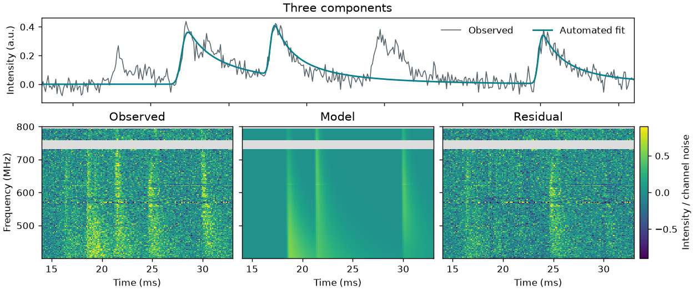
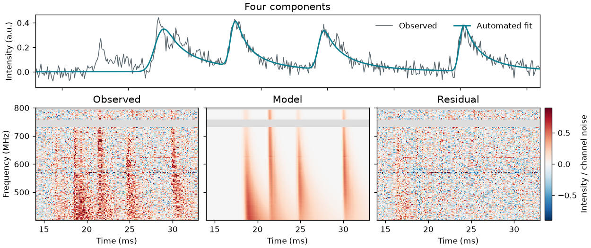

Follow the automated fit from three components to six. Each view shows the same time window and intensity scales. Gray bands mark masked channels.

The search found peaks near 18.7, 21.6 and 30.1 ms. The three-component fit with scattering leaves a peak near 24.7 ms in the residual.

The residual supplied a starting point for a fourth component near 24.7 ms. The gain rose from 6928 to 8561. The earlier peak near 16.3 ms remains.A second residual search added a component near 16.3 ms. The gain rose to 9176.The selected fit uses two overlapping terms with different spectra for the early feature. Their arrival times at 600 MHz are 16.20 and 16.35 ms. This split gives a smaller gain increase, from 9176 to 9228. The number of physical pulses remains uncertain.